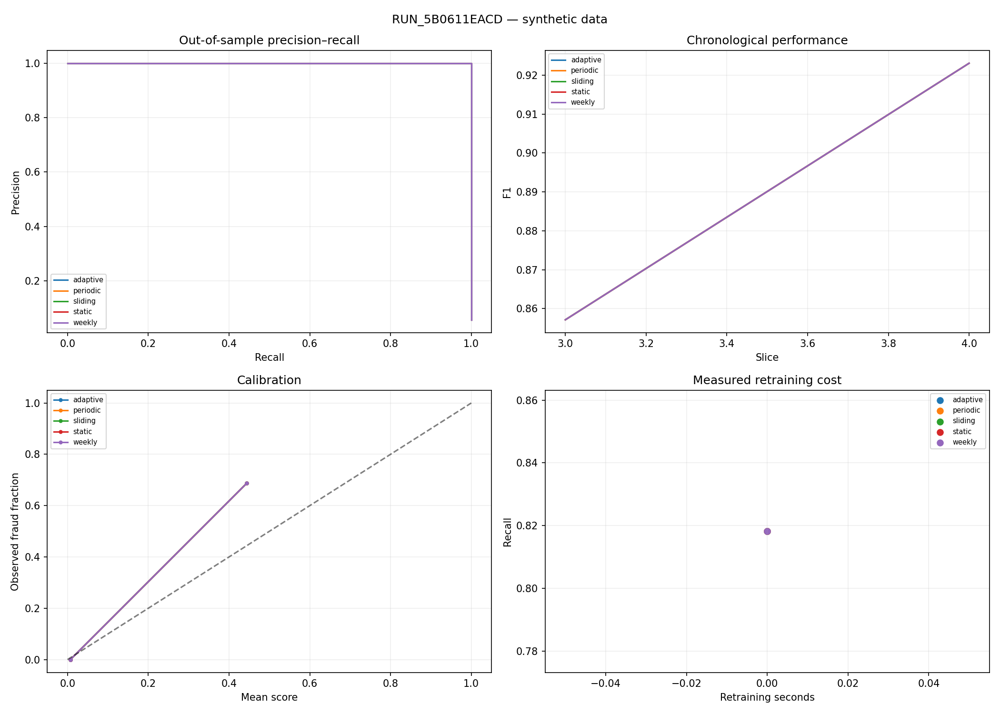

RUN_5B0611EACD · synthetic data · out-of-sample only
Thresholds and calibration use prior chronological validation data. Daily alert budgets are retrospective review rankings. Average precision is used consistently. Timestamp basis: dataset-relative hours.
| overall_precision | overall_recall | overall_f1 | overall_auc_pr | false_positives | false_negatives | |
|---|---|---|---|---|---|---|
| adaptive_model | 1.0 | 0.818182 | 0.9 | 1.0 | 0 | 2 |
| periodic_model | 1.0 | 0.818182 | 0.9 | 1.0 | 0 | 2 |
| sliding_model | 1.0 | 0.818182 | 0.9 | 1.0 | 0 | 2 |
| static_model | 1.0 | 0.818182 | 0.9 | 1.0 | 0 | 2 |
| weekly_model | 1.0 | 0.818182 | 0.9 | 1.0 | 0 | 2 |

| model | daily_budget | alerts | detected_fraud | precision | recall | interpretation |
|---|---|---|---|---|---|---|
| adaptive | 100 | 194 | 11 | 0.056701 | 1.0 | retrospective daily ranking; requires batch review |
| adaptive | 500 | 194 | 11 | 0.056701 | 1.0 | retrospective daily ranking; requires batch review |
| periodic | 100 | 194 | 11 | 0.056701 | 1.0 | retrospective daily ranking; requires batch review |
| periodic | 500 | 194 | 11 | 0.056701 | 1.0 | retrospective daily ranking; requires batch review |
| sliding | 100 | 194 | 11 | 0.056701 | 1.0 | retrospective daily ranking; requires batch review |
| sliding | 500 | 194 | 11 | 0.056701 | 1.0 | retrospective daily ranking; requires batch review |
| static | 100 | 194 | 11 | 0.056701 | 1.0 | retrospective daily ranking; requires batch review |
| static | 500 | 194 | 11 | 0.056701 | 1.0 | retrospective daily ranking; requires batch review |
| weekly | 100 | 194 | 11 | 0.056701 | 1.0 | retrospective daily ranking; requires batch review |
| weekly | 500 | 194 | 11 | 0.056701 | 1.0 | retrospective daily ranking; requires batch review |
| model | retrains | training_seconds | initial_training_seconds |
|---|---|---|---|
| static | 0 | 0 | 0.020663 |
| periodic | 0 | 0 | 0.020663 |
| weekly | 0 | 0 | 0.020663 |
| sliding | 0 | 0 | 0.020663 |
| adaptive | 0 | 0 | 0.020663 |
{
"periodic": {
"mean_delta": 0.0,
"ci_95": [
0.0,
0.0
],
"n_bootstrap": 500,
"n_seeds": 1,
"temporal_blocks": 2,
"block_length_slices": 2,
"status": "exploratory_short_stream",
"method": "paired circular moving-block bootstrap; shared time draws across seeds",
"limitation": "Conditional on supplied periods; seeds do not add independent transaction populations."
},
"weekly": {
"mean_delta": 0.0,
"ci_95": [
0.0,
0.0
],
"n_bootstrap": 500,
"n_seeds": 1,
"temporal_blocks": 2,
"block_length_slices": 2,
"status": "exploratory_short_stream",
"method": "paired circular moving-block bootstrap; shared time draws across seeds",
"limitation": "Conditional on supplied periods; seeds do not add independent transaction populations."
},
"sliding": {
"mean_delta": 0.0,
"ci_95": [
0.0,
0.0
],
"n_bootstrap": 500,
"n_seeds": 1,
"temporal_blocks": 2,
"block_length_slices": 2,
"status": "exploratory_short_stream",
"method": "paired circular moving-block bootstrap; shared time draws across seeds",
"limitation": "Conditional on supplied periods; seeds do not add independent transaction populations."
},
"adaptive": {
"mean_delta": 0.0,
"ci_95": [
0.0,
0.0
],
"n_bootstrap": 500,
"n_seeds": 1,
"temporal_blocks": 2,
"block_length_slices": 2,
"status": "exploratory_short_stream",
"method": "paired circular moving-block bootstrap; shared time draws across seeds",
"limitation": "Conditional on supplied periods; seeds do not add independent transaction populations."
}
}
{
"run_id": "RUN_5B0611EACD",
"version": "0.4.1",
"source_sha256": "2e1c57766b4d62a0821f223c4b0124a536e625a3095674f52048bb7ee41f660d",
"data_kind": "synthetic",
"dataset": "synthetic_paysim.csv",
"dataset_sha256": "c70534e817328a4d8eae3b491b4b693d85aee358012ba43a89c97d0c544da913",
"identity_sha256": null,
"seed": 42,
"n_train_slices": 2,
"evaluation_slice_indices": [
2,
3
],
"adaptive_window": 2,
"half_life_slices": null,
"max_retrains": 1,
"delay_slices": 2,
"latency_mode": "fixed",
"lognormal_mu": 1.38,
"lognormal_sigma": 0.45,
"model_params": {
"n_estimators": 150,
"max_depth": 6,
"learning_rate": 0.08,
"subsample": 0.85,
"colsample_bytree": 0.85,
"eval_metric": "logloss",
"n_jobs": 2
},
"strategies": [
"static",
"periodic",
"weekly",
"sliding",
"adaptive"
],
"recent_window_basis": "latest verified transaction arrival slice",
"initial_training_seconds": 0.02066341200043098,
"calibration_policy": "chronological final 20%, sigmoid if >=5 examples per class",
"initial_fit": {
"fit_rows": 160,
"validation_rows": 41,
"calibration": "disabled_or_insufficient_validation_classes",
"threshold": 0.02382001280784607,
"threshold_objective": "validation_f1"
},
"device": "cpu",
"python": "3.12.14",
"packages": {
"numpy": "2.5.4",
"pandas": "3.0.6",
"scipy": "1.18.1",
"scikit-learn": "1.9.1",
"xgboost": "3.4.1",
"river": "0.26.1"
},
"history_features": false,
"pre_transaction_only": false,
"all_features": false,
"label_queue": {
"current_slice": 3,
"delay_slices": 2,
"latency_mode": "fixed",
"total_enqueued": 194,
"total_matured": 0,
"total_pending": 194,
"maturity_rate": 0.0
},
"time_basis": "dataset-relative hours",
"exclude_card_identifiers": false,
"elapsed_seconds": 0.20495623600072577,
"validation": {
"dataset_type": "PaySim",
"file_name": "synthetic_paysim.csv",
"total_rows": 786,
"columns_count": 16,
"fraud_count": 52,
"legit_count": 734,
"fraud_ratio_pct": 6.616,
"step_min": 3,
"step_max": 1343,
"total_hours": 1341,
"total_days": 55.9,
"total_weeks": 8.0,
"validation_status": "PASSED"
},
"process_rss_mb": null
}
Error examples: error_examples.csv. Predictions and labels: predictions.csv. Threshold diagnostics are descriptive only. No publication claims are inferred from synthetic runs.